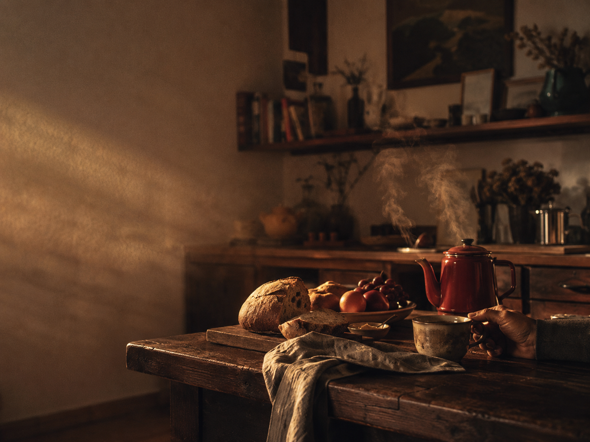

O Ritmo
Aqui, o tempo parece acontecer de outro jeito.
As árvores filtram a luz da manhã. Os caminhos convidam a caminhar sem destino. As varandas voltam a ser usadas no fim do dia. E pequenas cenas cotidianas, quase esquecidas pela cidade, reaparecem naturalmente.
O cheiro de café passando cedo. Um cachorro dormindo ao sol. Folhas secas atravessando a rua depois da chuva. O silêncio confortável de uma noite comum.
